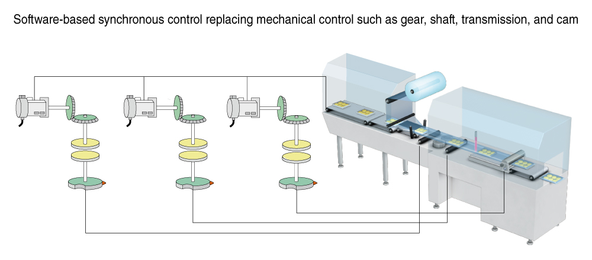
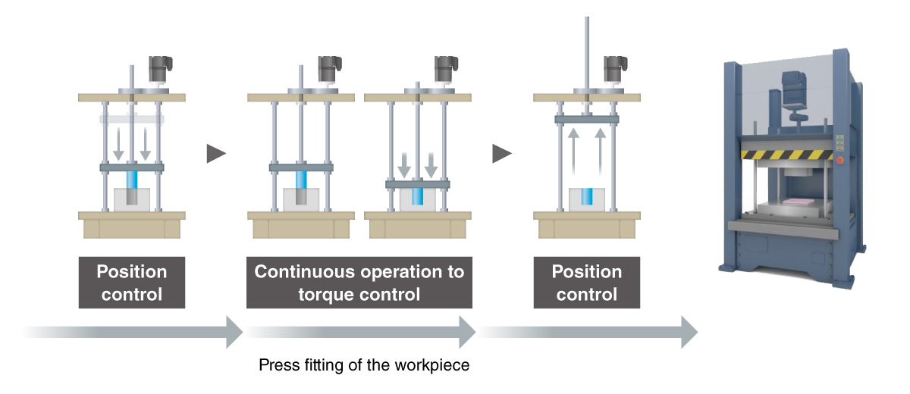
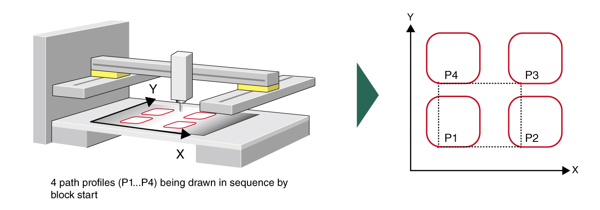
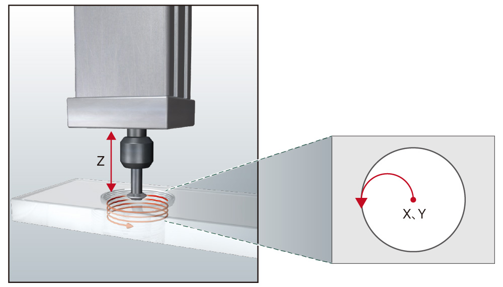

Controllers MELSEC iQ-R Series Fitur Produk -Gerakan, Posisi-

Fitur
Pemrograman mudah dengan memanfaatkan aset yang ada<sup>Motion</sup>
- Pemrograman mudah
- Mengurangi waktu pengembangan
- Mode gerakan sederhana memungkinkan modul gerakan memanfaatkan aset yang ada untuk mengonfigurasi peralatan servo berkinerja tinggi. Menggunakan kembali proyek yang ada membantu mengurangi waktu pengembangan program
- Menjalankan kontrol posisi dengan tabel profil gerakan dan kontrol sinkron dengan pengaturan parameter
- Perangkat jarak jauh dapat dihubungkan melalui CC-Link IE TSN dan diprogram dari modul CPU pengontrol yang dapat diprogram

Kontrol gerakan dengan blok fungsi (FB)<sup>Gerakan</sup>
- Mengurangi beban pemrograman
- Pemisahan beban dari CPU PLC
- Dalam mode kontrol gerakan PLCopen® FB, kontrol gerakan dimungkinkan dengan memanfaatkan pustaka PLCopen® FB kontrol gerak yang sesuai dengan standar internasional
- Pemrograman hanya dimungkinkan oleh modul CPU pengontrol terprogram, sehingga mengurangi waktu rekayasa
- Modul gerak melakukan kontrol gerak berkecepatan tinggi dan berakurasi tinggi. Operasi dalam bahasa ST dimungkinkan, sehingga beban kontrol dapat dipisahkan dari modul CPU pengontrol terprogram

Kontrol sinkron dan cam berbasis perangkat lunak sebagai
alternatif untuk kontrol mekanis<sup>GerakanGerakan sederhana</sup>
- Sistem kompak
- Pergantian mudah
- Sistem gerak kompak tanpa roda gigi dan cam dapat dikonfigurasi, menghilangkan kekhawatiran tentang keausan dan masa pakai
- Kinerja sistem akan meningkat karena komponen mekanis yang menyebabkan kesalahan akurasi tidak lagi digunakan
- Penggantian cam saat mengganti jenis produk dapat dengan mudah dicapai hanya dengan mengubah data cam

Pengurangan waktu siklus dengan pengalihan halus<sup>GerakanGerakan sederhana</sup>
- Tidak ada guncangan pada mesin
- Mengurangi waktu siklus
- Kontrol posisi dialihkan dengan halus ke kontrol torsi (operasi berkelanjutan ke kontrol torsi) tanpa menghentikan motor servo atau mengejutkan mesin
- Posisi saat ini selalu dilacak bahkan dalam kontrol torsi, dan oleh karena itu pemosisian pada kecepatan tinggi dimungkinkan bahkan setelah kontrol dialihkan kembali ke kontrol posisi, mengurangi waktu siklus

Rangkaian kontrol yang disinkronkan dengan gerakan benda kerja<sup>Gerakan sederhanaPemosisian</sup>
- Dengan menggabungkan data pemosisian dengan metode awal seperti mulai beberapa sumbu secara bersamaan, mulai cepat, dan mulai blok, serangkaian kontrol gerakan yang disinkronkan dengan gerakan benda kerja dapat dilakukan

Pemrosesan boring oleh sistem gerak<sup>Gerakan sederhanaPemosisian</sup>
- Pemrosesan akurasi tinggi
- Sumbu interpolasi linier (kontrol linier) mengikuti kontrol interpolasi melingkar 2 sumbu untuk mencapai interpolasi heliks dari lintasan spiral
- Untuk aplikasi yang memerlukan pengeboran lubang yang dalam dan besar, pemrosesan dengan akurasi tinggi dapat dilakukan dengan sistem gerak yang menggunakan kontrol interpolasi heliks 3-sumbu (X, Y, dan Z)
